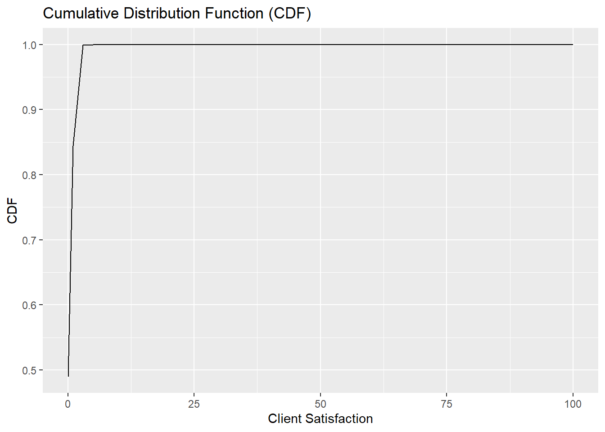
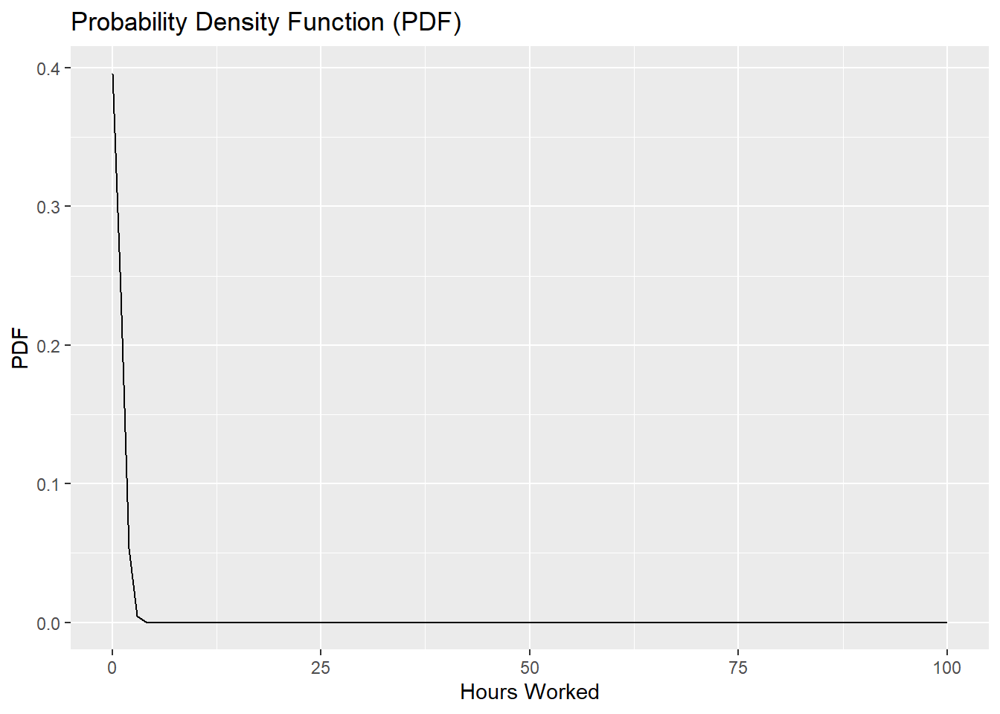
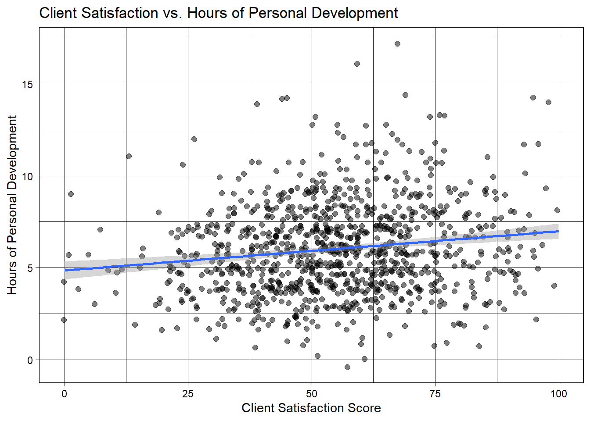

Change variable names then make a descriptive table, make new column
First and foremost, there are a few glaring things I want to clean within this data. First, there are two psych score columns. I have no need for two separate columns because it doesn’t increase their value. Instead, I’ll average out the two scores in a new column and delete the original two. As I clean the data, I have the following primary research question in mind: How does quantity of hours worked and quantity of personal development hours affect client satisfaction?
Also, I’ll rename headers to make the data easier to work with.
Code
#head(JP)# Add psych test 1 & 2 and divide by two, making new average score columnJP$avg_psych_score <- (JP$PsychTest1 + JP$PsychTest2)/2#Remove psych tests 1 & 2JP <- JP[ ,-1]JP <- JP[ ,-1]#Create new df with renamed variablesJP_Clean <- JP %>%rename(hrs_personal_dev ="HrsTrn",hrs_working ="HrsWrk",client_sat ="ClientSat",super_sat ="SuperSat",success_project_complete ="ProjCompl",years_edu ="YrsEdu" )head(JP_Clean)
Create df with variables, meaning, and measurement scale
The data is only as impactful as our understanding of it. I will create a indexed df below with each variable and its meaning.
Code
# Create variablesVariables <-c('years_edu', 'IQ', 'hrs_personal_dev', 'hrs_working', 'client_sat', 'super_sat', 'success_project_complete', 'avg_psych_score')# Add meaning for each variableMeaning <-c('Years of higher education', 'IQ Test Score', 'Hours dedicated to personal culture, outside of work', 'Hours worked on average per week', 'Customer satisfaction with the worker, score 0-100', 'Satisfaction of the superior with the worker, score 0-100', 'Percentage of projects successfully completed, score 0-100', 'Psychological test, score 0-100 (2 tests)')# Add measurement scale for each variable Measurement.Scale <-c('Discrete', 'Continuous', 'Continuous','Continuous', 'Continuous','Continuous', 'Continuous', 'Continuous')# Join the variables to create a data frameIndex_1 <-data.frame(Variables, Meaning, Measurement.Scale)#View(Index)
Summarize
Load in summarytools to get stats analysis of variables
The best way I have found to get a holistic understanding and look at all variables is to use summarytools (only works for numeric variables, luckily all of mine are numeric). It displays mean, std. deviation, max, min, and other measures that may be valuable for our descriptive analysis.
Below we’ll get deeper into the statistical analysis and map out the Probability Density Function and Cumulative Probability Function
Code
# Example datasetdata <-rnorm(1000, mean =0, sd =1)# Create a data frame#JP_Clean <- data.frame(x = data)# Calculate the CDF and PDFJP_Clean$cdf_sat <-ecdf(data)(JP_Clean$client_sat)JP_Clean$pdf_sat <-dnorm(JP_Clean$client_sat, mean =mean(data), sd =sd(data))# Plot the CDFggplot(JP_Clean, aes(x = client_sat, y = cdf_sat)) +geom_line() +labs(title ="Cumulative Distribution Function (CDF)", x ="Client Satisfaction", y ="CDF")

Code
# Plot the PDFggplot(JP_Clean, aes(x = client_sat, y = pdf_sat)) +geom_line() +labs(title ="Probability Density Function (PDF)", x ="Client Satisfaction", y ="PDF")
Code
# Example datasetdata2 <-rnorm(1000, mean =0, sd =1)# Create a data frame#JP_Clean <- data.frame(x = data)# Calculate the CDF and PDFJP_Clean$cdf_hours <-ecdf(data2)(JP_Clean$hrs_working)JP_Clean$pdf_hours <-dnorm(JP_Clean$hrs_working, mean =mean(data2), sd =sd(data2))# Plot the CDFggplot(JP_Clean, aes(x = hrs_working, y = cdf_hours)) +geom_line() +labs(title ="Cumulative Distribution Function (CDF)", x ="Hours Worked", y ="CDF")
Code
# Plot the PDFggplot(JP_Clean, aes(x = hrs_working, y = pdf_hours)) +geom_line() +labs(title ="Probability Density Function (PDF)", x ="Hours Worked", y ="PDF")

Both variables here are heavily skewed. This is a common trend among productivity numbers (Numeric variables that tend to only be positive).The data is far from normally distributed.
`summarise()` has grouped output by 'client_sat'. You can override using the
`.groups` argument.
Code
# print the results to the consoleprint(avgs_work)
# A tibble: 910 × 5
# Groups: client_sat [97]
client_sat hrs_working `mean(hrs_working)` `sd(hrs_working)` `n()`
<int> <int> <dbl> <dbl> <int>
1 0 36 36 NA 1
2 0 45 45 NA 1
3 1 29 29 NA 1
4 1 74 74 NA 1
5 3 37 37 NA 1
6 5 52 52 NA 1
7 6 45 45 NA 1
8 7 64 64 NA 1
9 9 60 60 NA 1
10 10 30 30 NA 1
# … with 900 more rows
Histograms of Hours Worked, Hours of Personal Development
To help visualize distributions, I’ll create a few histograms below for the relevant variables.
Code
hist_working_hours<-ggplot(JP_Clean, aes(x= hrs_working)) +geom_histogram() +labs(title ="Histogram of Hours Worked Bi-Weekly", x ='Hours Worked (Weekly)', y="Fequency") +theme_economist()hist_working_hours
`stat_bin()` using `bins = 30`. Pick better value with `binwidth`.
Code
#I now HIGHLY question the legitimacy of this data
Code
hist_development_hours<-ggplot(JP_Clean, aes(x= hrs_personal_dev)) +geom_histogram() +labs(title ="Histogram of Hours Spent on Personal Development", x ='Persnal Development (Hours)', y="Frequency") +theme_economist()hist_development_hours
`stat_bin()` using `bins = 30`. Pick better value with `binwidth`.
Plots of client satisfaction vs. hrs worked, hrs personal development
My personal favorite visualizations - geom_jitter/point to help show the correlation between hours of personal development and customer satisfaction. Below the viz, we’ll calculate the correlation and see if there is any significance.
Code
#Client sat has a mean of 54.9, so we will filter for the best performers and evaluate their hours worked, then look at all hours worked.JP_Clean %>%#filter(client_sat >= "54.9") %>% ggplot(aes(client_sat,hrs_personal_dev))+geom_jitter(size=2, alpha =0.5)+#width = xgeom_smooth(method ="lm")+#facet_wrap(~Gender)+labs(x='Client Satisfaction Score', y='Hours of Personal Development') +theme_linedraw()+labs(title="Client Satisfaction vs. Hours of Personal Development ")
`geom_smooth()` using formula = 'y ~ x'

Code
# NOW LETS LOOK AT HOURS OF PERSONAL DEVELOPMENT AND SEE IF THAT ACTUALLY INCREASES CLIENT SATIFACTIONcorrelation2 <-cor(JP_Clean$hrs_personal_dev,JP_Clean$client_sat)print(correlation2)
Warning: The following aesthetics were dropped during statistical transformation: colour
ℹ This can happen when ggplot fails to infer the correct grouping structure in
the data.
ℹ Did you forget to specify a `group` aesthetic or to convert a numerical
variable into a factor?
Code
# We'll new look atcorrelation <-cor(JP_Clean$client_sat, JP_Clean$hrs_working)print(correlation)
Call:
lm(formula = JP_Clean$client_sat ~ JP_Clean$hrs_working)
Residuals:
Min 1Q Median 3Q Max
-56.139 -11.898 -0.161 11.516 45.919
Coefficients:
Estimate Std. Error t value Pr(>|t|)
(Intercept) 51.01020 1.25892 40.519 < 2e-16 ***
JP_Clean$hrs_working 0.08282 0.02352 3.521 0.000449 ***
---
Signif. codes: 0 '***' 0.001 '**' 0.01 '*' 0.05 '.' 0.1 ' ' 1
Residual standard error: 17.9 on 998 degrees of freedom
Multiple R-squared: 0.01227, Adjusted R-squared: 0.01128
F-statistic: 12.4 on 1 and 998 DF, p-value: 0.0004485
Code
# No real correlation, seems more hours worked doesn't necessarily mean those hours were used wisely, as client often seems unhappy as hours increase.
No real correlation, seems more hours worked doesn’t necessarily mean those hours were used wisely, as client often seems unhappy as hours increase.
Estimations, SE, CI, Separating by Years of edu
Code
#Dplyr built into Tidy function belowedu <- JP_Clean %>%filter(years_edu !="0") %>%#have to slice random sample to avoid problem with 'result' laterslice(1:171)no_edu <- JP_Clean %>%filter(years_edu =="0")
Will act as auxiliary visualizations - No need to evaluate now necessarily
Code
plot(JP_Clean$client_sat, JP_Clean$hrs_working,type ="p",main ="Scatter of Client Satisfaction vs. Hours Worked",xlab ="Client Satisfaction",ylab ="Hours Worked",col ="red4",#Star of David Scatterpch=11)
mean <-barplot(JP_Clean$client_sat,xlab="Frequency",col="blue",space=5,main ="Client Satifaction Distibution" )abline( h =mean(JP_Clean$client_sat), col ="blue", lwd =4)legend("topright", legend ="Mean", col ="blue", lwd =6, label(JP_Client$clientsat, TRUE))
Source Code
---title: "Landreth Descriptive Project"author: "Connor Landreth"desription: "First iteration of the class project"date: "07/18/2023"format: html: toc: true code-fold: true code-copy: true code-tools: truecategories: - final project - Connor Landreth - dplyr---### Setup#### Load in Relevant PackagesFor descriptive analysis, we'll use quite a few classic packages including Tidyverse, ggplot2, knitr, and summarytools```{r Packages}library(tidyverse)library(knitr)library(kableExtra)library(xml2)library(psych)library(ggplot2)library(ggthemes)library(summarytools)library(dplyr)library(reshape2)library(SmartEDA)install.packages("summarytools")library(summarytools)```#### Set wd and read in data```{r wd_read}getwd()#JP = Job PerformanceJP <-read.csv("Connor_datafolder/JP.csv")#View(JP)```### Clean#### Change variable names then make a descriptive table, make new columnFirst and foremost, there are a few glaring things I want to clean within this data. First, there are two psych score columns. I have no need for two separate columns because it doesn't increase their value. Instead, I'll average out the two scores in a new column and delete the original two. As I clean the data, I have the following primary research question in mind: How does quantity of hours worked and quantity of personal development hours affect client satisfaction?Also, I'll rename headers to make the data easier to work with.```{r Clean}#head(JP)# Add psych test 1 & 2 and divide by two, making new average score columnJP$avg_psych_score <- (JP$PsychTest1 + JP$PsychTest2)/2#Remove psych tests 1 & 2JP <- JP[ ,-1]JP <- JP[ ,-1]#Create new df with renamed variablesJP_Clean <- JP %>%rename(hrs_personal_dev ="HrsTrn",hrs_working ="HrsWrk",client_sat ="ClientSat",super_sat ="SuperSat",success_project_complete ="ProjCompl",years_edu ="YrsEdu" )head(JP_Clean)```#### Create df with variables, meaning, and measurement scaleThe data is only as impactful as our understanding of it. I will create a indexed df below with each variable and its meaning.```{r Index}# Create variablesVariables <-c('years_edu', 'IQ', 'hrs_personal_dev', 'hrs_working', 'client_sat', 'super_sat', 'success_project_complete', 'avg_psych_score')# Add meaning for each variableMeaning <-c('Years of higher education', 'IQ Test Score', 'Hours dedicated to personal culture, outside of work', 'Hours worked on average per week', 'Customer satisfaction with the worker, score 0-100', 'Satisfaction of the superior with the worker, score 0-100', 'Percentage of projects successfully completed, score 0-100', 'Psychological test, score 0-100 (2 tests)')# Add measurement scale for each variable Measurement.Scale <-c('Discrete', 'Continuous', 'Continuous','Continuous', 'Continuous','Continuous', 'Continuous', 'Continuous')# Join the variables to create a data frameIndex_1 <-data.frame(Variables, Meaning, Measurement.Scale)#View(Index)```### Summarize#### Load in summarytools to get stats analysis of variablesThe best way I have found to get a holistic understanding and look at all variables is to use summarytools (only works for numeric variables, luckily all of mine are numeric). It displays mean, std. deviation, max, min, and other measures that may be valuable for our descriptive analysis.```{r Summary_stats}summarytools::descr(JP_Clean)#All numeric so all present ```### CDF & PDF#### Plot PDF and CDFBelow we'll get deeper into the statistical analysis and map out the Probability Density Function and Cumulative Probability Function```{r CDF_PDF}# Example datasetdata <-rnorm(1000, mean =0, sd =1)# Create a data frame#JP_Clean <- data.frame(x = data)# Calculate the CDF and PDFJP_Clean$cdf_sat <-ecdf(data)(JP_Clean$client_sat)JP_Clean$pdf_sat <-dnorm(JP_Clean$client_sat, mean =mean(data), sd =sd(data))# Plot the CDFggplot(JP_Clean, aes(x = client_sat, y = cdf_sat)) +geom_line() +labs(title ="Cumulative Distribution Function (CDF)", x ="Client Satisfaction", y ="CDF")# Plot the PDFggplot(JP_Clean, aes(x = client_sat, y = pdf_sat)) +geom_line() +labs(title ="Probability Density Function (PDF)", x ="Client Satisfaction", y ="PDF")``````{r}# Example datasetdata2 <-rnorm(1000, mean =0, sd =1)# Create a data frame#JP_Clean <- data.frame(x = data)# Calculate the CDF and PDFJP_Clean$cdf_hours <-ecdf(data2)(JP_Clean$hrs_working)JP_Clean$pdf_hours <-dnorm(JP_Clean$hrs_working, mean =mean(data2), sd =sd(data2))# Plot the CDFggplot(JP_Clean, aes(x = hrs_working, y = cdf_hours)) +geom_line() +labs(title ="Cumulative Distribution Function (CDF)", x ="Hours Worked", y ="CDF")# Plot the PDFggplot(JP_Clean, aes(x = hrs_working, y = pdf_hours)) +geom_line() +labs(title ="Probability Density Function (PDF)", x ="Hours Worked", y ="PDF")```Both variables here are heavily skewed. This is a common trend among productivity numbers (Numeric variables that tend to only be positive).The data is far from normally distributed. ### Descriptive Analysis#### Group```{r Group_Averages}avgs_sat <- JP_Clean %>%group_by(client_sat, hrs_working) %>%summarise(mean(client_sat),sd(client_sat), n())#print the results to the consoleprint(avgs_sat)avgs_work <- JP_Clean %>%group_by(client_sat, hrs_working) %>%summarize(mean(hrs_working), sd(hrs_working), n())# print the results to the consoleprint(avgs_work)```#### Histograms of Hours Worked, Hours of Personal DevelopmentTo help visualize distributions, I'll create a few histograms below for the relevant variables.```{r Hist_Hrs_Worked}hist_working_hours<-ggplot(JP_Clean, aes(x= hrs_working)) +geom_histogram() +labs(title ="Histogram of Hours Worked Bi-Weekly", x ='Hours Worked (Weekly)', y="Fequency") +theme_economist()hist_working_hours#I now HIGHLY question the legitimacy of this data``````{r Hist_personal_dev}hist_development_hours<-ggplot(JP_Clean, aes(x= hrs_personal_dev)) +geom_histogram() +labs(title ="Histogram of Hours Spent on Personal Development", x ='Persnal Development (Hours)', y="Frequency") +theme_economist()hist_development_hours```#### Plots of client satisfaction vs. hrs worked, hrs personal developmentMy personal favorite visualizations - geom_jitter/point to help show the correlation between hours of personal development and customer satisfaction. Below the viz, we'll calculate the correlation and see if there is any significance.```{r CSAT_v_PD}#Client sat has a mean of 54.9, so we will filter for the best performers and evaluate their hours worked, then look at all hours worked.JP_Clean %>%#filter(client_sat >= "54.9") %>% ggplot(aes(client_sat,hrs_personal_dev))+geom_jitter(size=2, alpha =0.5)+#width = xgeom_smooth(method ="lm")+#facet_wrap(~Gender)+labs(x='Client Satisfaction Score', y='Hours of Personal Development') +theme_linedraw()+labs(title="Client Satisfaction vs. Hours of Personal Development ")``````{r CSAT_PD_COR}# NOW LETS LOOK AT HOURS OF PERSONAL DEVELOPMENT AND SEE IF THAT ACTUALLY INCREASES CLIENT SATIFACTIONcorrelation2 <-cor(JP_Clean$hrs_personal_dev,JP_Clean$client_sat)print(correlation2)``````{r CSAT_v_HW}JP_Clean %>%#filter(hrs_working < 50) %>% #filter(client_sat >= "54.9") %>% ggplot(aes(client_sat,hrs_working, color = client_sat))+geom_jitter(size=2, alpha =0.5)+#width = xgeom_smooth(method ="lm")+#facet_wrap(~Gender)+labs(x='Client Satisfaction Score', y='Hours Working') +theme_linedraw()+labs(title="Client Satisfaction & Hours Worked")``````{r CSAT_HW_COR}# We'll new look atcorrelation <-cor(JP_Clean$client_sat, JP_Clean$hrs_working)print(correlation)summary(lm(JP_Clean$client_sat ~ JP_Clean$hrs_working))# No real correlation, seems more hours worked doesn't necessarily mean those hours were used wisely, as client often seems unhappy as hours increase. ```No real correlation, seems more hours worked doesn't necessarily mean those hours were used wisely, as client often seems unhappy as hours increase.#### Estimations, SE, CI, Separating by Years of edu```{r Sort_edu}#Dplyr built into Tidy function belowedu <- JP_Clean %>%filter(years_edu !="0") %>%#have to slice random sample to avoid problem with 'result' laterslice(1:171)no_edu <- JP_Clean %>%filter(years_edu =="0")``````{r name_edu}colnames(edu) <-c("Education", "IQ", "Y_bar_e", "edu", "no_edu")colnames(no_edu) <-c("Education", "IQ", "Y_bar_n_e", "e", "n_e")``````{r Gap_Analysis}gap <- edu$Y_bar_e - no_edu$Y_bar_n_egap_se <-sqrt(edu$edu^2/ edu$no_edu + no_edu$e^2/ no_edu$n_e)gap_ci_l <- gap -1.96* gap_segap_ci_u <- gap +1.96* gap_seresult <-cbind(edu[, -1], no_edu[,-(1:2)], gap, gap_se, gap_ci_l, gap_ci_u)print(result)```### Additional PlotsWill act as auxiliary visualizations - No need to evaluate now necessarily```{r Another_CSAT_HW2}plot(JP_Clean$client_sat, JP_Clean$hrs_working,type ="p",main ="Scatter of Client Satisfaction vs. Hours Worked",xlab ="Client Satisfaction",ylab ="Hours Worked",col ="red4",#Star of David Scatterpch=11)``````{r Another_CSAT_HW}plot(JP_Clean$client_sat ~ JP_Clean$hrs_working)abline(a=54.97,b=0.11)``````{r CSAT_Frequency_ab}mean <-barplot(JP_Clean$client_sat,xlab="Frequency",col="blue",space=5,main ="Client Satifaction Distibution" )abline( h =mean(JP_Clean$client_sat), col ="blue", lwd =4)legend("topright", legend ="Mean", col ="blue", lwd =6, label(JP_Client$clientsat, TRUE))```